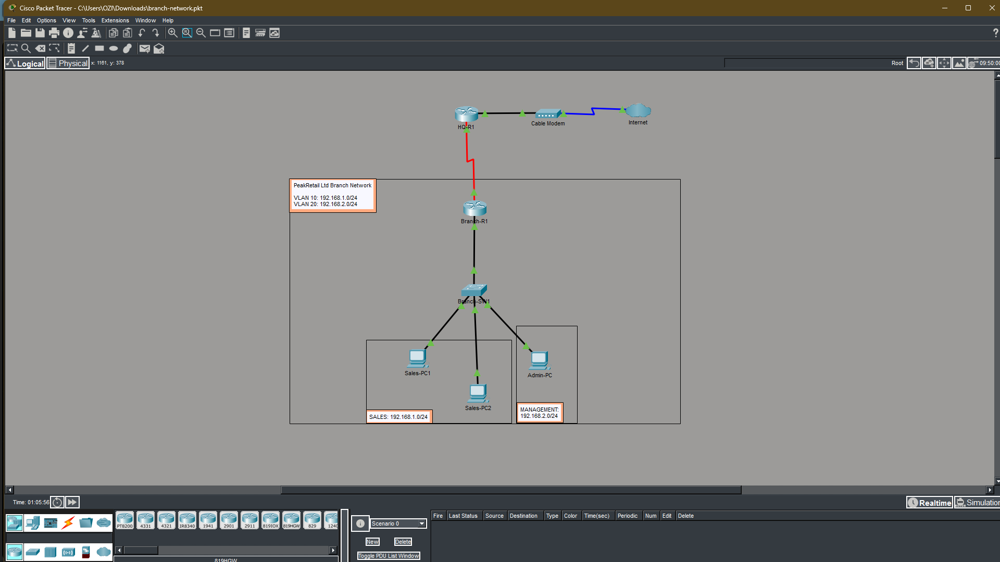
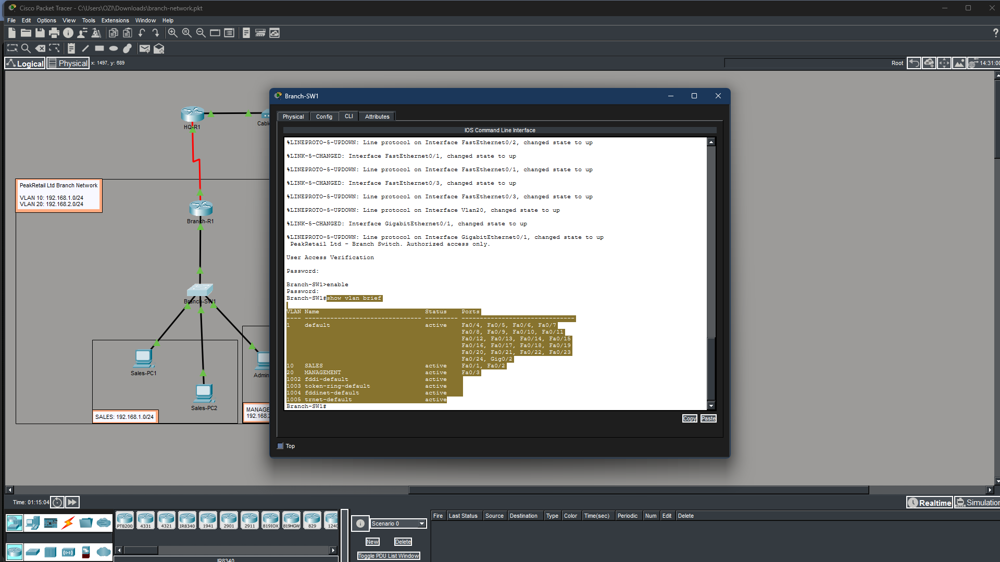
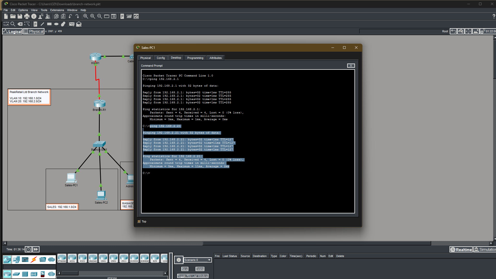
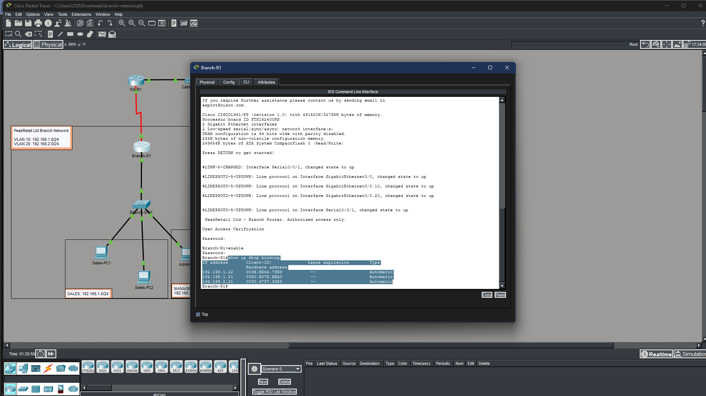
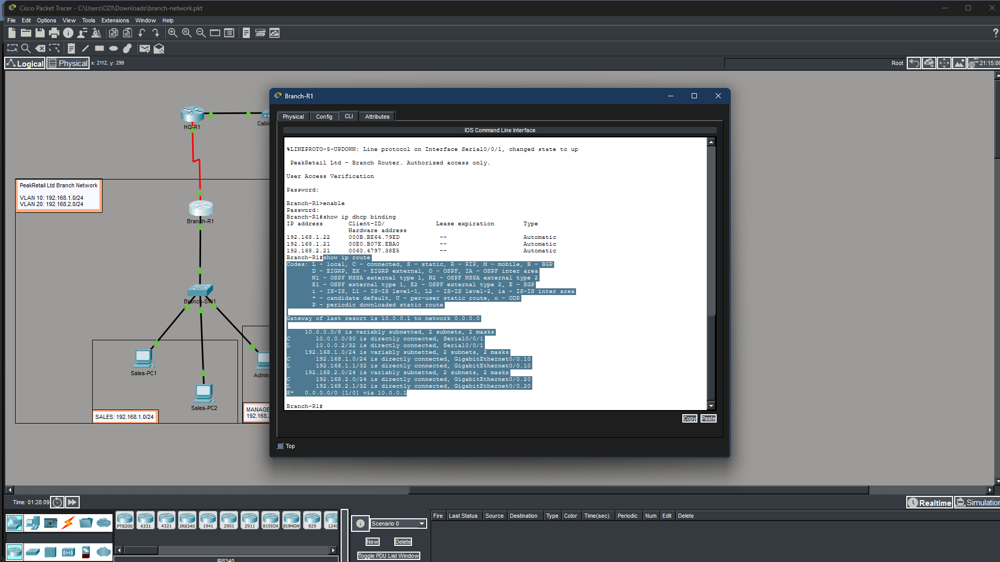
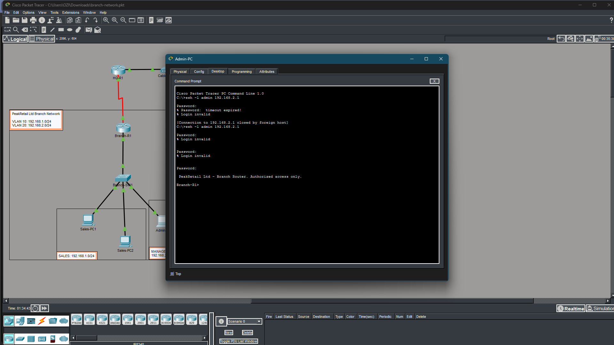
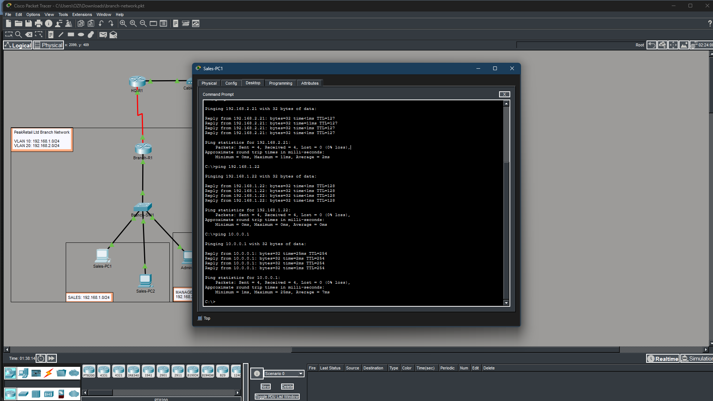

cat client_brief.txt
cat objectives.txt
cat tools.txt
| TOOL / TECHNOLOGY | PURPOSE |
|---|
cat skills.txt
cat topology.txt
[HQ-R1: 10.0.0.1] ---------- WAN: 10.0.0.0/30
|
[Branch-R1: S0/0/1: 10.0.0.2]
[Branch-R1: G0/0.10: 192.168.1.1] VLAN 10 SALES
[Branch-R1: G0/0.20: 192.168.2.1] VLAN 20 MANAGEMENT
| (trunk)
[Branch-SW1: VLAN20 mgmt: 192.168.2.2]
| | |
[Fa0/1] [Fa0/2] [Fa0/3]
VLAN 10 VLAN 10 VLAN 20
Sales-PC1 Sales-PC2 Admin-PC
DHCP .21 DHCP .22 DHCP .21
| DEVICE | INTERFACE | IP ADDRESS | VLAN | ROLE |
|---|---|---|---|---|
| Branch-R1 | G0/0.10 | 192.168.1.1 | VLAN 10 | Sales gateway |
| Branch-R1 | G0/0.20 | 192.168.2.1 | VLAN 20 | Management gateway |
| Branch-R1 | S0/0/1 | 10.0.0.2 | -- | WAN uplink to HQ |
| Branch-SW1 | VLAN 20 | 192.168.2.2 | VLAN 20 | Switch management IP |
| Sales-PC1 | NIC | DHCP (192.168.1.21) | VLAN 10 | Sales workstation |
| Sales-PC2 | NIC | DHCP (192.168.1.22) | VLAN 10 | Sales workstation |
| Admin-PC | NIC | DHCP (192.168.2.21) | VLAN 20 | Management workstation |
| HQ-R1 | S0/0/0 | 10.0.0.1 | -- | HQ router / WAN peer |
cat lab_parts.txt
cat results.txt
ls ./evidence/

Fig 1 - PeakRetail branch topology in Cisco Packet Tracer
Fig 2 - show vlan brief confirming VLAN 10 and VLAN 20 assignments
Fig 3 - Sales-PC1 pinging Admin-PC across VLANs successfully
Fig 4 - show ip dhcp binding showing per-VLAN address assignments
Fig 5 - show ip route on Branch-R1 showing subinterface routes
Fig 6 - Admin-PC SSH session to Branch-R1 using SSH v2
Fig 7 - Complete ping matrix confirming all connectivitycat lessons_learned.txt